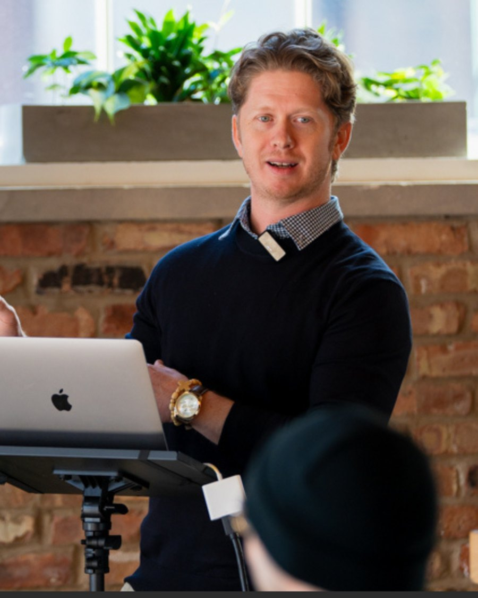

Know for certain where your operation and team stand.
You make your biggest calls on a picture of your organization you’ve never actually checked. The Baseline Assessment checks it with your whole team, then hands you a 90 day plan.
10 markers. 3 drivers. 1 plan.
Your own read first. Bring your team in when you’re ready.
Why it matters
Most leaders are sure their team knows the plan.
In a study of 11,000 managers, only a third could name their organization’s top three priorities.
Sull and Homkes, Harvard Business Review, 2015.
When the plan rests on assumptions, the gaps become the assumptions your team makes, and the misfires land back on your desk. And from inside the operation, no leader can see it clearly on their own.
Your team and your mission were entrusted to you. Knowing where they really stand is part of stewarding them well.
“It gave me clarity in direction I didn’t even know I needed.”Harrison K., Author
What it is
10 markers. 3 drivers. 1 plan.
Most assessments stop at a score. The Baseline goes three layers down, so you leave with a plan, not just a number.
-
Step 1 · Where you stand
The 10 markers
Ten health markers that the leading organizational health research has in common, and where you stand on each.
- Shared Direction
- Purpose and Meaning
- Role Clarity and Decision Rights
- Execution and Accountability
- Communication and Coordination
- Trust and Psychological Safety
- Teamwork and Shared Results
- Recognition and Growth
- Leadership
- Adaptability and External Orientation
-
Step 2 · Why you’re there
The 3 drivers
The 86 questions aren’t a long list. Each question sits inside one of the three competencies that drive healthy organizations. So the markers show where you stand, and the drivers show precisely what’s causing it.
ClarityDoes everyone know why we exist, where we’re going, and what’s expected of them?AccountabilityDo we meet on a steady rhythm, and do those conversations keep us on track?CultureIs there real trust, and does each person feel heard, valued, and supported? -
Step 3 · What to do next
The 1 plan
One plan, built from your results. The two or three most strategic moves to improve your health in the next 90 days, and a check back at 90 days to see what moved.
How it works
Two weeks of your team’s time.
- Your team answers in 20 to 25 minutes.On their own, over a two week window.
- I analyze every answer and review every finding myself.Before anything reaches you.
- You get the report, the plan, and a walkthrough.Live, or recorded if that’s easier.
Psychological safety
A confidential design.
All direct answers are received and reviewed confidentially, then analyzed for the common themes and ideas across the group. It’s the safest path to honest feedback, and honest feedback is what gives you the best results and the best plan moving forward.
For the team first. A structurally safe way to tell the truth, without fear of retaliation. It’s never a performance review, no one’s words reach leadership, and anyone who is struggling can get real help.
For the leader, the payoff. An honest read you can trust and act on, because what you see is what your team actually thinks.
Two things every respondent is told up front. If an answer shows harm to a person, abuse, or illegal activity, the law may require action. And on a very small team, combined scores can sometimes hint at how someone answered.

Who’s behind it
I joined a faith based nonprofit as the second hire. The founding team was three, and we grew to 50. The Baseline comes from what we learned the hard way about what keeps a growing team healthy.
“He sees what most people miss and brings his catalytic questions, insights, and ideas to bear in moments when an organization needs it most.”Mattanah DeWitt, Director of Strategic Communications
Before you start
What’s the Snapshot?
A free taste of the Baseline, a short version you take on your own, before you bring your team in. You see your results on screen right away and get a copy by email.
Is this a sales pitch?
No. Your Snapshot results are yours whether or not we ever talk. If you’d like help reading them, you can book a time with me at the end.
My team is small. Does this still fit?
Yes. It’s built for small teams where most decisions still find their way to the leader.
Start with your own read.
Take the free Snapshot in about 4 minutes. If what you see is worth a closer look, we’ll talk about bringing your team in.
“Our first 90 days together were the most focused and productive I’ve ever been. We landed an $80K client and hit every goal in 30 days.”Ben J., Event planning firm owner
Step 1 of 3
Tell me about your work.
These help me read your results in your world.
What’s in place today?
Answer what you know to be true. “Not sure” is a useful answer.